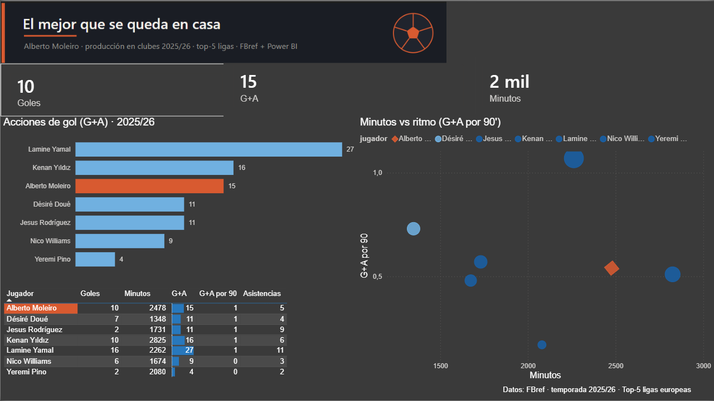
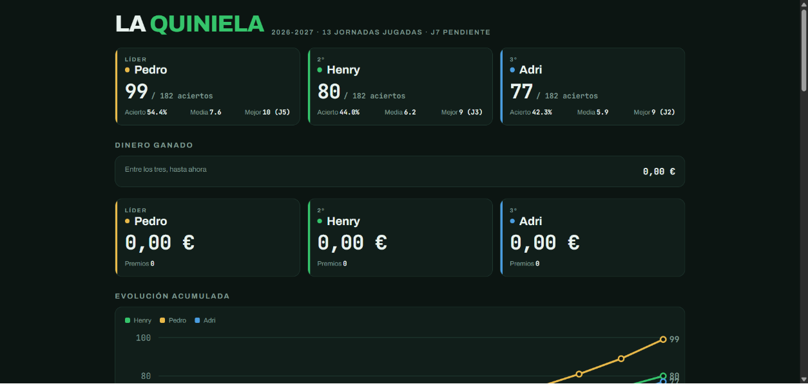

//00 hbtdata / Data from the Canary Islands
Data explained with things from here.
I'm Henry Barrios Thornhill, a data analyst in Gran Canaria, in the Canary Islands. I build my own tools with public data and show how they are made.
//00 hbtdata / Data from the Canary Islands
I'm Henry Barrios Thornhill, a data analyst in Gran Canaria, in the Canary Islands. I build my own tools with public data and show how they are made.
//01 The Canary Islands in data
Fuel, football, local history and football pools. Data from the islands that people here actually share, told so it makes sense at first glance.
//02 Project / Canarias Gas Tracker
Each dot is a real petrol station, from turquoise (cheapest) to ochre (most expensive). Prices come every day from the Spanish government's public API, and GitHub Actions updates the site on its own.
Unleaded 95 / prices on 13 Oct 2026 / Spanish government
//03 Project / Moleiro and the World Cup
How much does Canarian footballer Alberto Moleiro produce compared with other players in Europe's top five leagues? A Python pipeline pulls the data from FBref and a Power BI dashboard makes it talk.
//04 Project / Historia para Gandules
Every video from @historiaparagandules, Luis Cabrera's account of Canarian stories, pinned to the place it talks about. With island and category filters, a search box and a game to guess where each story happened.
//05 Project / La Quiniela
The dashboard for a football pools game (the Spanish quiniela) between three friends: results go into a Google Sheet published as CSV, and the site works out correct picks, best matchday and progress over time.
//06 Behind the scenes / Content factory
The carousels, reels and stories on @hbtdata are not laid out by hand: a set of scripts generates them with the brand identity and custom charts. These particles are code too.
//07 How I work / Fixed rules
Here, at sea level: the highest peak on each island, from west to east. For prices I use medians, and every chart carries a date and a source. These peaks are also where the logo comes from.
Highest point in metres / IGN and Wikipedia, Oct 2026
//08 hbtdata / Contact
Write to me if you'd like to talk about a project, suggest a local dataset worth telling, or commission an analysis or a dashboard. I reply in English and Spanish.
// What I've built
Real projects with public data. Every one of them works today and you can open it. The tools themselves are in Spanish.
The cheapest petrol stations on the islands, with filters by island and fuel type. It runs on the Spanish government's fuel price API and updates itself every day.
How much does Alberto Moleiro produce compared with other players in Europe's top five leagues? A Python pipeline that pulls the data from FBref, and a Power BI dashboard to read it.

A map of 121 stories from @historiaparagandules, Luis Cabrera's account: each video pinned to the place it talks about, with filters, a search box and a game to guess where it happened. The data comes out of a Python pipeline and the site only reads a JSON file.

A dashboard for a football pools game between three friends: results are entered in a Google Sheet published as CSV, and the page works out correct picks, average per matchday, best matchday and cumulative progress.

The carousels, reels and stories on @hbtdata come out of a set of scripts with the brand identity, custom charts and the usual rules: bars from zero, medians, date and source.
// About me
Henry Barrios Thornhill (hbtdata) is a data analyst from Gran Canaria, Spain, who codes with AI, and the creator of Abre tu sobre (abretusobre.es).
I'm from Las Palmas de Gran Canaria. I studied Business Administration and then a Master's in Big Data, and I've been working with data for a few years now: analysis, report automation and dashboards.
Today I do it at a communications agency in Gran Canaria and, in my spare time, I build what you see above. I like a number to make sense at first glance, and I like what I make to be something you can open, play with and check.
Away from the screen, several times a year I volunteer with Fundación Foresta, planting native species across the Canary Islands.
// Contact
For a job offer, an analysis, a dashboard or an AI-powered process. I reply in English and Spanish, as soon as I can.
hbtdataanalyst@gmail.com Running a business in the Canary Islands?Websites and AI processes for local businesses (in Spanish)